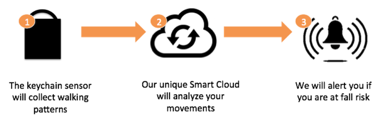

Advanced data analytics for fall prediction and health progression monitoring
To make sure that we provide the highest level of care, our advanced analytics engine will use historic data collected by our sensors to detect abnormalities or health anomalies and predict fall risk for your loved ones.
